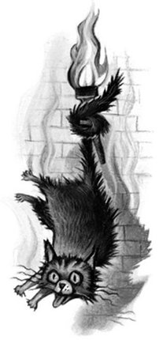

October arrived, spreading a damp chill over the grounds and into the castle. Madam Pomfrey, the nurse, was kept busy by a sudden spate of colds among the staff and students. Her Pepperup Potion worked instantly, though it left the drinker smoking at the ears for several hours afterward. Ginny Weasley, who had been looking pale, was bullied into taking some by Percy. The steam pouring from under her vivid hair gave the impression that her whole head was on fire.
Raindrops the size of bullets thundered on the castle windows for days on end; the lake rose, the flower beds turned into muddy streams, and Hagrid’s pumpkins swelled to the size of garden sheds. Oliver Wood’s enthusiasm for regular training sessions, however, was not dampened, which was why Harry was to be found, late one stormy Saturday afternoon a few days before Halloween, returning to Gryffindor Tower, drenched to the skin and splattered with mud.
Even aside from the rain and wind it hadn’t been a happy practice session. Fred and George, who had been spying on the Slytherin team, had seen for themselves the speed of those new Nimbus Two Thousand and Ones. They reported that the Slytherin team was no more than seven greenish blurs, shooting through the air like missiles.
As Harry squelched along the deserted corridor he came across somebody who looked just as preoccupied as he was. Nearly Headless Nick, the ghost of Gryffindor Tower, was staring morosely out of a window, muttering under his breath, “. . . don’t fulfill their requirements . . . half an inch, if that . . .”
“Hello, Nick,” said Harry.
“Hello, hello,” said Nearly Headless Nick, starting and looking round. He wore a dashing, plumed hat on his long curly hair, and a tunic with a ruff, which concealed the fact that his neck was almost completely severed. He was pale as smoke, and Harry could see right through him to the dark sky and torrential rain outside.
“You look troubled, young Potter,” said Nick, folding a transparent letter as he spoke and tucking it inside his doublet.
“So do you,” said Harry.
“Ah,” Nearly Headless Nick waved an elegant hand, “a matter of no importance. . . . It’s not as though I really wanted to join. . . . Thought I’d apply, but apparently I ‘don’t fulfill requirements’ —”
In spite of his airy tone, there was a look of great bitterness on his face.
“But you would think, wouldn’t you,” he erupted suddenly, pulling the letter back out of his pocket, “that getting hit forty-five times in the neck with a blunt axe would qualify you to join the Headless Hunt?”
“Oh — yes,” said Harry, who was obviously supposed to agree.
“I mean, nobody wishes more than I do that it had all been quick and clean, and my head had come off properly, I mean, it would have saved me a great deal of pain and ridicule. However —” Nearly Headless Nick shook his letter open and read furiously:
“‘We can only accept huntsmen whose heads have parted company with their bodies. You will appreciate that it would be impossible otherwise for members to participate in hunt activities such as Horseback Head-Juggling and Head Polo. It is with the greatest regret, therefore, that I must inform you that you do not fulfill our requirements. With very best wishes, Sir Patrick Delaney-Podmore.’”
Fuming, Nearly Headless Nick stuffed the letter away.
“Half an inch of skin and sinew holding my neck on, Harry! Most people would think that’s good and beheaded, but oh, no, it’s not enough for Sir Properly Decapitated-Podmore.”
Nearly Headless Nick took several deep breaths and then said, in a far calmer tone, “So — what’s bothering you? Anything I can do?”
“No,” said Harry. “Not unless you know where we can get seven free Nimbus Two Thousand and Ones for our match against Sly —”
The rest of Harry’s sentence was drowned out by a high-pitched mewling from somewhere near his ankles. He looked down and found himself gazing into a pair of lamp-like yellow eyes. It was Mrs. Norris, the skeletal gray cat who was used by the caretaker, Argus Filch, as a sort of deputy in his endless battle against students.
“You’d better get out of here, Harry,” said Nick quickly. “Filch isn’t in a good mood — he’s got the flu and some third years accidentally plastered frog brains all over the ceiling in dungeon five. He’s been cleaning all morning, and if he sees you dripping mud all over the place —”
“Right,” said Harry, backing away from the accusing stare of Mrs. Norris, but not quickly enough. Drawn to the spot by the mysterious power that seemed to connect him with his foul cat, Argus Filch burst suddenly through a tapestry to Harry’s right, wheezing and looking wildly about for the rule-breaker. There was a thick tartan scarf bound around his head, and his nose was unusually purple.
“Filth!” he shouted, his jowls aquiver, his eyes popping alarmingly as he pointed at the muddy puddle that had dripped from Harry’s Quidditch robes. “Mess and muck everywhere! I’ve had enough of it, I tell you! Follow me, Potter!”
So Harry waved a gloomy good-bye to Nearly Headless Nick and followed Filch back downstairs, doubling the number of muddy footprints on the floor.
Harry had never been inside Filch’s office before; it was a place most students avoided. The room was dingy and windowless, lit by a single oil lamp dangling from the low ceiling. A faint smell of fried fish lingered about the place. Wooden filing cabinets stood around the walls; from their labels, Harry could see that they contained details of every pupil Filch had ever punished. Fred and George Weasley had an entire drawer to themselves. A highly polished collection of chains and manacles hung on the wall behind Filch’s desk. It was common knowledge that he was always begging Dumbledore to let him suspend students by their ankles from the ceiling.
Filch grabbed a quill from a pot on his desk and began shuffling around looking for parchment.
“Dung,” he muttered furiously, “great sizzling dragon bogies . . . frog brains . . . rat intestines . . . I’ve had enough of it . . . make an example . . . where’s the form . . . yes . . .”
He retrieved a large roll of parchment from his desk drawer and stretched it out in front of him, dipping his long black quill into the ink pot.
“Name . . . Harry Potter. Crime . . .”
“It was only a bit of mud!” said Harry.
“It’s only a bit of mud to you, boy, but to me it’s an extra hour scrubbing!” shouted Filch, a drip shivering unpleasantly at the end of his bulbous nose. “Crime . . . befouling the castle . . . suggested sentence . . .”
Dabbing at his streaming nose, Filch squinted unpleasantly at Harry, who waited with bated breath for his sentence to fall.
But as Filch lowered his quill, there was a great BANG! on the ceiling of the office, which made the oil lamp rattle.
“PEEVES!” Filch roared, flinging down his quill in a transport of rage. “I’ll have you this time, I’ll have you!”
And without a backward glance at Harry, Filch ran flat-footed from the office, Mrs. Norris streaking alongside him.
Peeves was the school poltergeist, a grinning, airborne menace who lived to cause havoc and distress. Harry didn’t much like Peeves, but couldn’t help feeling grateful for his timing. Hopefully, whatever Peeves had done (and it sounded as though he’d wrecked something very big this time) would distract Filch from Harry.
Thinking that he should probably wait for Filch to come back, Harry sank into a moth-eaten chair next to the desk. There was only one thing on it apart from his half-completed form: a large, glossy, purple envelope with silver lettering on the front. With a quick glance at the door to check that Filch wasn’t on his way back, Harry picked up the envelope and read:
KWIKSPELL
_____________________________________
A Correspondence Course in Beginners’ Magic
Intrigued, Harry flicked the envelope open and pulled out the sheaf of parchment inside. More curly silver writing on the front page said:
Fascinated, Harry thumbed through the rest of the envelope’s contents. Why on earth did Filch want a Kwikspell course? Did this mean he wasn’t a proper wizard? Harry was just reading “Lesson One: Holding Your Wand (Some Useful Tips)” when shuffling footsteps outside told him Filch was coming back. Stuffing the parchment back into the envelope, Harry threw it back onto the desk just as the door opened.
Filch was looking triumphant.
“That Vanishing Cabinet was extremely valuable!” he was saying gleefully to Mrs. Norris. “We’ll have Peeves out this time, my sweet —”
His eyes fell on Harry and then darted to the Kwikspell envelope, which, Harry realized too late, was lying two feet away from where it had started.
Filch’s pasty face went brick red. Harry braced himself for a tidal wave of fury. Filch hobbled across to his desk, snatched up the envelope, and threw it into a drawer.
“Have you — did you read — ?” he sputtered.
“No,” Harry lied quickly.
Filch’s knobbly hands were twisting together.
“If I thought you’d read my private — not that it’s mine — for a friend — be that as it may — however —”
Harry was staring at him, alarmed; Filch had never looked madder. His eyes were popping, a tic was going in one of his pouchy cheeks, and the tartan scarf didn’t help.
“Very well — go — and don’t breathe a word — not that — however, if you didn’t read — go now, I have to write up Peeves’ report — go —”
Amazed at his luck, Harry sped out of the office, up the corridor, and back upstairs. To escape from Filch’s office without punishment was probably some kind of school record.
“Harry! Harry! Did it work?”
Nearly Headless Nick came gliding out of a classroom. Behind him, Harry could see the wreckage of a large black-and-gold cabinet that appeared to have been dropped from a great height.
“I persuaded Peeves to crash it right over Filch’s office,” said Nick eagerly. “Thought it might distract him —”
“Was that you?” said Harry gratefully. “Yeah, it worked, I didn’t even get detention. Thanks, Nick!”
They set off up the corridor together. Nearly Headless Nick, Harry noticed, was still holding Sir Patrick’s rejection letter.
“I wish there was something I could do for you about the Headless Hunt,” Harry said.
Nearly Headless Nick stopped in his tracks and Harry walked right through him. He wished he hadn’t; it was like stepping through an icy shower.
“But there is something you could do for me,” said Nick excitedly. “Harry — would I be asking too much — but no, you wouldn’t want —”
“What is it?” said Harry.
“Well, this Halloween will be my five hundredth deathday,” said Nearly Headless Nick, drawing himself up and looking dignified.
“Oh,” said Harry, not sure whether he should look sorry or happy about this. “Right.”
“I’m holding a party down in one of the roomier dungeons. Friends will be coming from all over the country. It would be such an honor if you would attend. Mr. Weasley and Miss Granger would be most welcome, too, of course — but I daresay you’d rather go to the school feast?” He watched Harry on tenterhooks.
“No,” said Harry quickly, “I’ll come —”
“My dear boy! Harry Potter, at my deathday party! And” — he hesitated, looking excited — “do you think you could possibly mention to Sir Patrick how very frightening and impressive you find me?”
“Of — of course,” said Harry.
Nearly Headless Nick beamed at him.
“A deathday party?” said Hermione keenly when Harry had changed at last and joined her and Ron in the common room. “I bet there aren’t many living people who can say they’ve been to one of those — it’ll be fascinating!”
“Why would anyone want to celebrate the day they died?” said Ron, who was halfway through his Potions homework and grumpy. “Sounds dead depressing to me. . . .”
Rain was still lashing the windows, which were now inky black, but inside all looked bright and cheerful. The firelight glowed over the countless squashy armchairs where people sat reading, talking, doing homework or, in the case of Fred and George Weasley, trying to find out what would happen if you fed a Filibuster firework to a salamander. Fred had “rescued” the brilliant orange, fire-dwelling lizard from a Care of Magical Creatures class and it was now smoldering gently on a table surrounded by a knot of curious people.
Harry was at the point of telling Ron and Hermione about Filch and the Kwikspell course when the salamander suddenly whizzed into the air, emitting loud sparks and bangs as it whirled wildly round the room. The sight of Percy bellowing himself hoarse at Fred and George, the spectacular display of tangerine stars showering from the salamander’s mouth, and its escape into the fire, with accompanying explosions, drove both Filch and the Kwikspell envelope from Harry’s mind.
By the time Halloween arrived, Harry was regretting his rash promise to go to the deathday party. The rest of the school was happily anticipating their Halloween feast; the Great Hall had been decorated with the usual live bats, Hagrid’s vast pumpkins had been carved into lanterns large enough for three men to sit in, and there were rumors that Dumbledore had booked a troupe of dancing skeletons for the entertainment.
“A promise is a promise,” Hermione reminded Harry bossily. “You said you’d go to the deathday party.”
So at seven o’clock, Harry, Ron, and Hermione walked straight past the doorway to the packed Great Hall, which was glittering invitingly with gold plates and candles, and directed their steps instead toward the dungeons.
The passageway leading to Nearly Headless Nick’s party had been lined with candles, too, though the effect was far from cheerful: These were long, thin, jet-black tapers, all burning bright blue, casting a dim, ghostly light even over their own living faces. The temperature dropped with every step they took. As Harry shivered and drew his robes tightly around him, he heard what sounded like a thousand fingernails scraping an enormous blackboard.
“Is that supposed to be music?” Ron whispered. They turned a corner and saw Nearly Headless Nick standing at a doorway hung with black velvet drapes.
“My dear friends,” he said mournfully. “Welcome, welcome . . . so pleased you could come. . . .”
He swept off his plumed hat and bowed them inside.
It was an incredible sight. The dungeon was full of hundreds of pearly-white, translucent people, mostly drifting around a crowded dance floor, waltzing to the dreadful, quavering sound of thirty musical saws, played by an orchestra on a raised, black-draped platform. A chandelier overhead blazed midnight-blue with a thousand more black candles. Their breath rose in a mist before them; it was like stepping into a freezer.
“Shall we have a look around?” Harry suggested, wanting to warm up his feet.
“Careful not to walk through anyone,” said Ron nervously, and they set off around the edge of the dance floor. They passed a group of gloomy nuns, a ragged man wearing chains, and the Fat Friar, a cheerful Hufflepuff ghost, who was talking to a knight with an arrow sticking out of his forehead. Harry wasn’t surprised to see that the Bloody Baron, a gaunt, staring Slytherin ghost covered in silver bloodstains, was being given a wide berth by the other ghosts.
“Oh, no,” said Hermione, stopping abruptly. “Turn back, turn back, I don’t want to talk to Moaning Myrtle —”
“Who?” said Harry as they backtracked quickly.
“She haunts one of the toilets in the girls’ bathroom on the first floor,” said Hermione.
“She haunts a toilet?”
“Yes. It’s been out of order all year because she keeps having tantrums and flooding the place. I never went in there anyway if I could avoid it; it’s awful trying to have a pee with her wailing at you —”
“Look, food!” said Ron.
On the other side of the dungeon was a long table, also covered in black velvet. They approached it eagerly but next moment had stopped in their tracks, horrified. The smell was quite disgusting. Large, rotten fish were laid on handsome silver platters; cakes, burned charcoal-black, were heaped on salvers; there was a great maggoty haggis, a slab of cheese covered in furry green mold and, in pride of place, an enormous gray cake in the shape of a tombstone, with tar-like icing forming the words,
SIR NICHOLAS DE MIMSY-PORPINGTON
DIED 31ST OCTOBER, 1492
Harry watched, amazed, as a portly ghost approached the table, crouched low, and walked through it, his mouth held wide so that it passed through one of the stinking salmon.
“Can you taste it if you walk through it?” Harry asked him.
“Almost,” said the ghost sadly, and he drifted away.
“I expect they’ve let it rot to give it a stronger flavor,” said Hermione knowledgeably, pinching her nose and leaning closer to look at the putrid haggis.
“Can we move? I feel sick,” said Ron.
They had barely turned around, however, when a little man swooped suddenly from under the table and came to a halt in midair before them.
“Hello, Peeves,” said Harry cautiously.
Unlike the ghosts around them, Peeves the Poltergeist was the very reverse of pale and transparent. He was wearing a bright orange party hat, a revolving bow tie, and a broad grin on his wide, wicked face.
“Nibbles?” he said sweetly, offering them a bowl of peanuts covered in fungus.
“No thanks,” said Hermione.
“Heard you talking about poor Myrtle,” said Peeves, his eyes dancing. “Rude you was about poor Myrtle.” He took a deep breath and bellowed, “OI! MYRTLE!”
“Oh, no, Peeves, don’t tell her what I said, she’ll be really upset,” Hermione whispered frantically. “I didn’t mean it, I don’t mind her — er, hello, Myrtle.”
The squat ghost of a girl had glided over. She had the glummest face Harry had ever seen, half-hidden behind lank hair and thick, pearly spectacles.
“What?” she said sulkily.
“How are you, Myrtle?” said Hermione in a falsely bright voice. “It’s nice to see you out of the toilet.”
Myrtle sniffed.
“Miss Granger was just talking about you —” said Peeves slyly in Myrtle’s ear.
“Just saying — saying — how nice you look tonight,” said Hermione, glaring at Peeves.
Myrtle eyed Hermione suspiciously.
“You’re making fun of me,” she said, silver tears welling rapidly in her small, see-through eyes.
“No — honestly — didn’t I just say how nice Myrtle’s looking?” said Hermione, nudging Harry and Ron painfully in the ribs.
“Oh, yeah —”
“She did —”
“Don’t lie to me,” Myrtle gasped, tears now flooding down her face, while Peeves chuckled happily over her shoulder. “D’you think I don’t know what people call me behind my back? Fat Myrtle! Ugly Myrtle! Miserable, moaning, moping Myrtle!”
“You’ve forgotten pimply,” Peeves hissed in her ear.
Moaning Myrtle burst into anguished sobs and fled from the dungeon. Peeves shot after her, pelting her with moldy peanuts, yelling, “Pimply! Pimply!”
“Oh, dear,” said Hermione sadly.
Nearly Headless Nick now drifted toward them through the crowd.
“Enjoying yourselves?”
“Oh, yes,” they lied.
“Not a bad turnout,” said Nearly Headless Nick proudly. “The Wailing Widow came all the way up from Kent. . . . It’s nearly time for my speech, I’d better go and warn the orchestra. . . .”
The orchestra, however, stopped playing at that very moment. They, and everyone else in the dungeon, fell silent, looking around in excitement, as a hunting horn sounded.
“Oh, here we go,” said Nearly Headless Nick bitterly.
Through the dungeon wall burst a dozen ghost horses, each ridden by a headless horseman. The assembly clapped wildly; Harry started to clap, too, but stopped quickly at the sight of Nick’s face.
The horses galloped into the middle of the dance floor and halted, rearing and plunging. At the front of the pack was a large ghost who held his bearded head under his arm, from which position he was blowing the horn. The ghost leapt down, lifted his head high in the air so he could see over the crowd (everyone laughed), and strode over to Nearly Headless Nick, squashing his head back onto his neck.
“Nick!” he roared. “How are you? Head still hanging in there?”
He gave a hearty guffaw and clapped Nearly Headless Nick on the shoulder.
“Welcome, Patrick,” said Nick stiffly.
“Live ’uns!” said Sir Patrick, spotting Harry, Ron, and Hermione and giving a huge, fake jump of astonishment, so that his head fell off again (the crowd howled with laughter).
“Very amusing,” said Nearly Headless Nick darkly.
“Don’t mind Nick!” shouted Sir Patrick’s head from the floor. “Still upset we won’t let him join the Hunt! But I mean to say — look at the fellow —”
“I think,” said Harry hurriedly, at a meaningful look from Nick, “Nick’s very — frightening and — er —”
“Ha!” yelled Sir Patrick’s head. “Bet he asked you to say that!”
“If I could have everyone’s attention, it’s time for my speech!” said Nearly Headless Nick loudly, striding toward the podium and climbing into an icy blue spotlight.
“My late lamented lords, ladies, and gentlemen, it is my great sorrow . . .”
But nobody heard much more. Sir Patrick and the rest of the Headless Hunt had just started a game of Head Hockey and the crowd was turning to watch. Nearly Headless Nick tried vainly to recapture his audience, but gave up as Sir Patrick’s head went sailing past him to loud cheers.
Harry was very cold by now, not to mention hungry.
“I can’t stand much more of this,” Ron muttered, his teeth chattering, as the orchestra ground back into action and the ghosts swept back onto the dance floor.
“Let’s go,” Harry agreed.
They backed toward the door, nodding and beaming at anyone who looked at them, and a minute later were hurrying back up the passageway full of black candles.
“Pudding might not be finished yet,” said Ron hopefully, leading the way toward the steps to the entrance hall.
And then Harry heard it.
“. . . rip . . . tear . . . kill . . .”
It was the same voice, the same cold, murderous voice he had heard in Lockhart’s office.
He stumbled to a halt, clutching at the stone wall, listening with all his might, looking around, squinting up and down the dimly lit passageway.
“Harry, what’re you — ?”
“It’s that voice again — shut up a minute —”
“. . . soo hungry . . . for so long . . .”
“Listen!” said Harry urgently, and Ron and Hermione froze, watching him.
“. . . kill . . . time to kill . . .”
The voice was growing fainter. Harry was sure it was moving away — moving upward. A mixture of fear and excitement gripped him as he stared at the dark ceiling; how could it be moving upward? Was it a phantom, to whom stone ceilings didn’t matter?
“This way,” he shouted, and he began to run, up the stairs, into the entrance hall. It was no good hoping to hear anything here, the babble of talk from the Halloween feast was echoing out of the Great Hall. Harry sprinted up the marble staircase to the first floor, Ron and Hermione clattering behind him.
“Harry, what’re we —”
“SHH!”
Harry strained his ears. Distantly, from the floor above, and growing fainter still, he heard the voice: “. . . I smell blood. . . . I SMELL BLOOD!”
His stomach lurched —
“It’s going to kill someone!” he shouted, and ignoring Ron’s and Hermione’s bewildered faces, he ran up the next flight of steps three at a time, trying to listen over his own pounding footsteps —
Harry hurtled around the whole of the second floor, Ron and Hermione panting behind him, not stopping until they turned a corner into the last, deserted passage.
“Harry, what was that all about?” said Ron, wiping sweat off his face. “I couldn’t hear anything. . . .”
But Hermione gave a sudden gasp, pointing down the corridor.
“Look!”
Something was shining on the wall ahead. They approached slowly, squinting through the darkness. Foot-high words had been daubed on the wall between two windows, shimmering in the light cast by the flaming torches.
THE CHAMBER OF SECRETS HAS BEEN OPENED. ENEMIES OF THE HEIR, BEWARE.
“What’s that thing — hanging underneath?” said Ron, a slight quiver in his voice.
As they edged nearer, Harry almost slipped — there was a large puddle of water on the floor; Ron and Hermione grabbed him, and they inched toward the message, eyes fixed on a dark shadow beneath it. All three of them realized what it was at once, and leapt backward with a splash.
Mrs. Norris, the caretaker’s cat, was hanging by her tail from the torch bracket. She was stiff as a board, her eyes wide and staring.
For a few seconds, they didn’t move. Then Ron said, “Let’s get out of here.”
“Shouldn’t we try and help —” Harry began awkwardly.
“Trust me,” said Ron. “We don’t want to be found here.”
But it was too late. A rumble, as though of distant thunder, told them that the feast had just ended. From either end of the corridor where they stood came the sound of hundreds of feet climbing the stairs, and the loud, happy talk of well-fed people; next moment, students were crashing into the passage from both ends.
The chatter, the bustle, the noise died suddenly as the people in front spotted the hanging cat. Harry, Ron, and Hermione stood alone, in the middle of the corridor, as silence fell among the mass of students pressing forward to see the grisly sight.
Then someone shouted through the quiet.
“Enemies of the Heir, beware! You’ll be next, Mudbloods!”
It was Draco Malfoy. He had pushed to the front of the crowd, his cold eyes alive, his usually bloodless face flushed, as he grinned at the sight of the hanging, immobile cat.